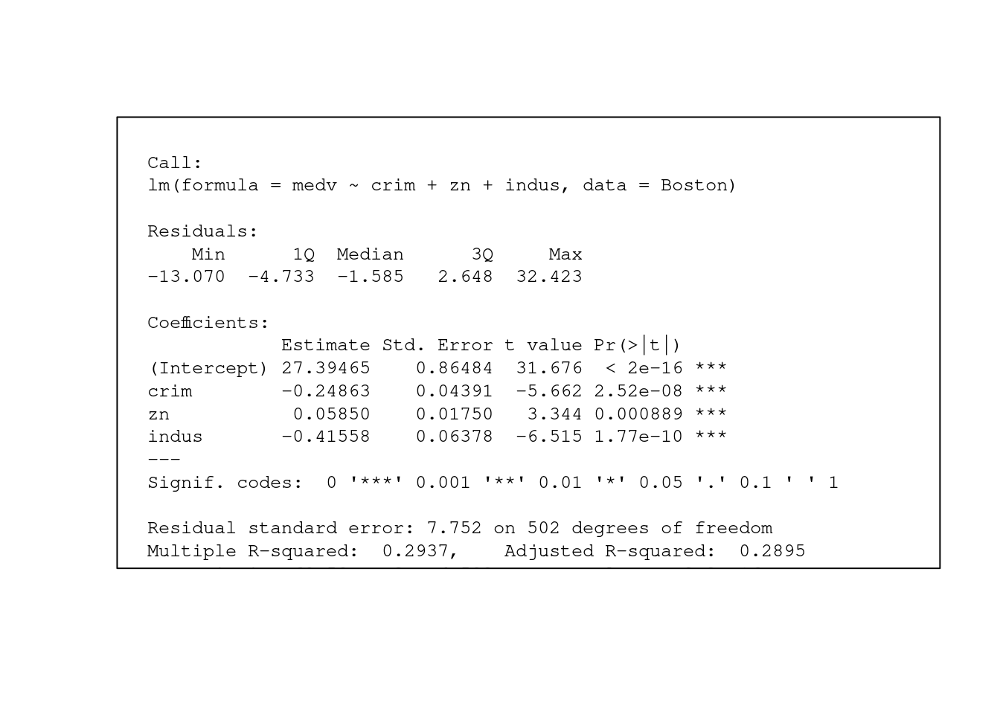

── Conflicts ────────────────────────────────────────── tidyverse_conflicts() ──
✖ dplyr::filter() masks stats::filter()
✖ dplyr::lag() masks stats::lag()
ℹ Use the conflicted package (<http://conflicted.r-lib.org/>) to force all conflicts to become errors
data(Boston)# set a standard graphic theme for plots from the ggthemes packagetheme_set(theme_hc())print_output <-function(output, cex =0.8) { tmp <-capture.output(output)plot.new()text(0, 1, paste(tmp, collapse='\n'), adj =c(0,1), family ='mono', cex = cex)box()}#options(scipen=999)
This exercise involves the Boston housing data set in ISLR2. Assume that we are interested in median home values, medv.
Examine medv as a function of crim, zn and indus in a multiple linear regres- sion.
A) Identify the predictors which are “statistically significant” at α = 0.05.
All three predictors (crime rate per capita, proportion of residential land zoned for lots of 25k sq ft, and proportion of non-retail business acres per town) had a p-value of less than .05; therefore, we reject the null hypothesis that these variables are statistically different from 0.
# set up pipeline from data to model results for linear modelsm_medv <-lm(medv ~ crim + zn + indus, data = Boston)print_output(summary(m_medv))

B) List the null and alternative hypotheses tested in 1A and your conclusions.
For multiple parameters, \(\beta\), the null we are testing in model 1A is:
meaning that our null hypothesis is that each \(\beta\) coefficient is equal to each other and to \(0\).
Our alternative hypothesis: is that at least one of the three \(\beta\) coefficients are not equal to \(0\).
We reject the null hypothesis, and there is a useful linear relationship between median home value and one of the three predictors in the model.
\[
H_a : \beta_i \ne 0 \space (i = 1,...,p)
\]
C) Interpret each of the regression coefficients as if it were the primary exposure of interest.
Do they make sense?
\(\beta_0\): When crime rate, the proportion of residential land zone, and the proportion of non-retail business acres all equal \(0\), the expected average income is \(\$27,395\) USD.
In this case, the intercept without centering predictors makes sense since there can be a suburb with 0 crime rate or 0 proportions.
\(\beta_{crim}\): For every additional crime rate per capita, we expect the median home value to drop \(.25\) or \(\$250\) USD, while holding other predictors variables constant.
\(\beta_{zn}\): For every one unit change in the proportion of residential land zoned for lots over 25,000 sq.ft., we expect the median home value to increase by \(.06\) or \(\$60\) USD, while holding other predictor variables constant.
\(\beta_{indus}\): For every one unit increase in the proportion of non-retail business acres per town, we expect the median home value to drop \(.42\) or \(\$420\) USD, while holding other predictor variables constant.
D) It’s generally not good practice to interpret all predictors as if they were the exposure of interest.
Why do you think doing so could be problematic?
When creating these models the researcher typically has a hypothesis in mind guided by previous research and theory. Therefore, if we report every explanatory variable included in the model, we run the risk of capitalizing on spurious correlations, when two variables appear to be related by they are not (they are through a confounding variable). Furthermore, interpreting all predictors could be problematic because of the complexity of interpretation and making inferences. Also, multicollinearity and confounding issues may mask individual effects of each predictor.
E) Construct and interpret 95% confidence intervals
For \(\hat{\beta_{crim}}\), \(\hat{\beta_{zn}}\), and \(\hat{\beta_{inuds}}\). (you do not need to calculate them “by hand”).
How does the confidence intervals correspond to the hypotheses tested in 1A and 1B?
From the graphic we can quickly see whether any of the predictor’s 95% confidence intervals capture 0, denoted by the blue line, which we do not observe to be the case for any of the predictors and we continue to reject the Null hypothesis \(\beta_p=0\).
If we were to draw 100 samples with size \(n\) from the same target population, we would expect 95% of these samples to contain the true value of our \(\beta\) coefficients.
Our explanatory variables crime rate, zn, and indus explain about \(29.4\%\) (adjusted \(r^2 = 28.9\%\)) of variation in median home values across suburbs.
2. Fit a simple linear regression model with medv as a function of zn and compare it to the model from question 1 using the global F test and one other method.
Which model do you prefer based on the results of the comparison?
We use a General F test to examine which model to keep by testing the Null hypothesis that \(H_0 = RSS_{reduced} = RSS_{full}\) and we reject the Null hypothesis suggesting that the Residual Sum of Squares for the simple linear model is higher than the less parsimonious model with three predictors. Therefore, the more complex model minimizes the residuals at the expense of more predictors included in the model.
We also examine the r_squared of the simple model, and the adjusted r-square of the three predictor model and find that our simple model leaves a lot of unexplained variability in median home values. The model with more predictors, (predictors = crim, zn, and indus), explains \(29\%\) of the variance in median home value, while the reduced model (predictor = zn) explains \(13\%\) of the variance in median home value. The adjusted R-squared adjusts for multiple predictors in the model, therefore, we report the adjusted \(adj \space R^2\) when interpreting the model with more predictor.
With a higher R-squared and lower sigma-squared (i.e variance), the full model is a better fit to the data and minimizes the residuals more so than the simple 1-predictor model.
m_simple <-lm(medv ~ zn, data = Boston)anova(m_medv, m_simple)
Analysis of Variance Table
Model 1: medv ~ crim + zn + indus
Model 2: medv ~ zn
Res.Df RSS Df Sum of Sq F Pr(>F)
1 502 30170
2 504 37167 -2 -6996.6 58.209 < 2.2e-16 ***
---
Signif. codes: 0 '***' 0.001 '**' 0.01 '*' 0.05 '.' 0.1 ' ' 1
message(str_c(cat("The R-squared for the simple model is ", round(summary(m_simple)$r.squared, 3), " (adjusted R-squared ", round(summary(m_simple)$r.squared, 3), ").\n" ), cat(" The adjusted R-squared for the model with 3 predictors is ",round(summary(m_medv)$adj.r.squared, 3) ) ))
The R-squared for the simple model is 0.13 (adjusted R-squared 0.13 ).
The adjusted R-squared for the model with 3 predictors is 0.289